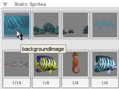
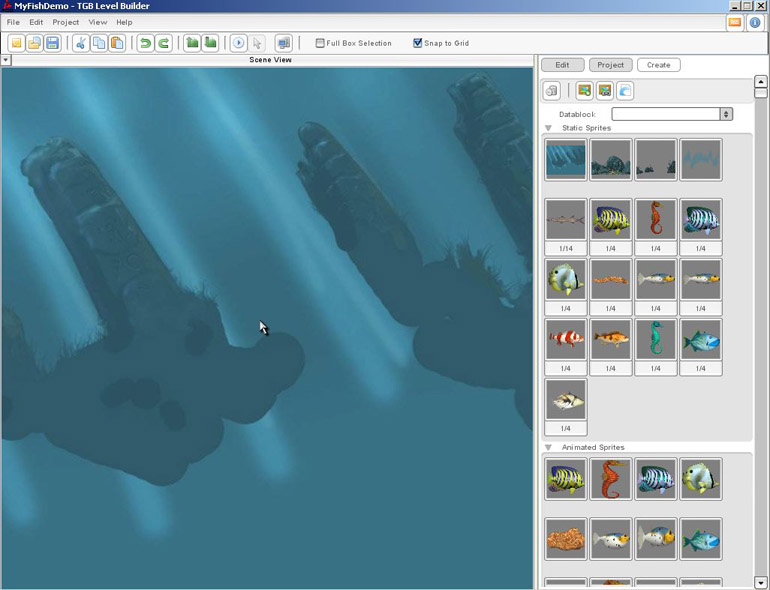
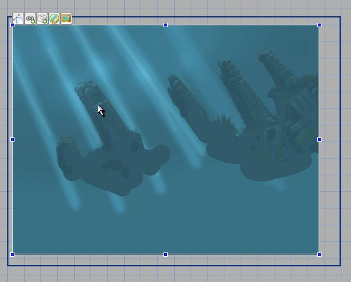
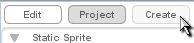
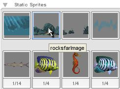
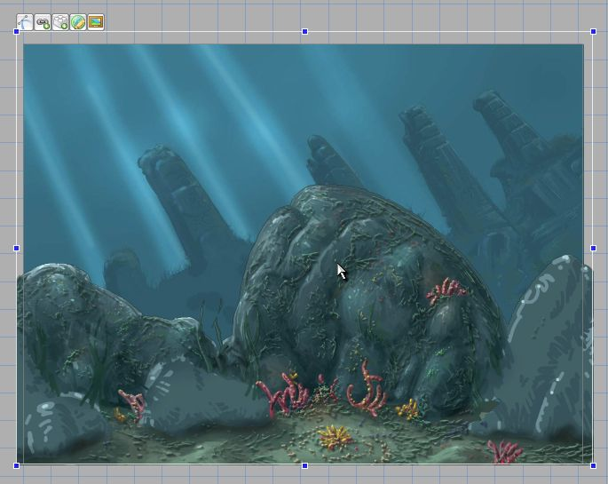
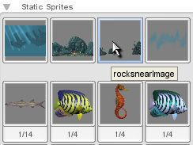
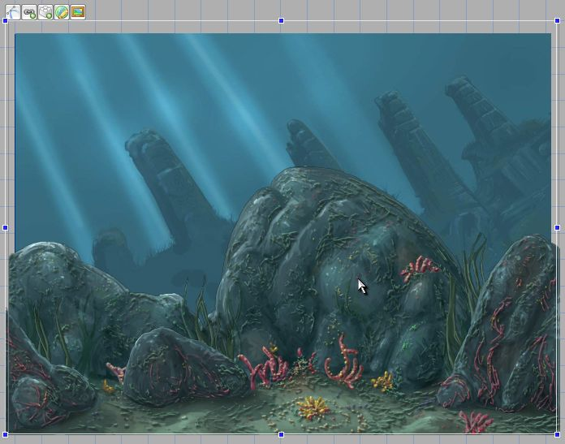
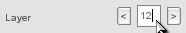

Torque 2D – Fish Demo Tutorial - Part 2
2. Creating the Level
2.1 Add our background image
We have three background images that we can place. Let's place the first one on the Static Sprites list (as shown in Figure 2.1.1). So click and drag it into your level (as shown in Figure 2.1.2).

Figure 2.1.1

Figure 2.1.2
As you can see, after dropping the image into your level it is far too big. This is because the image's source size was created very big to scale properly with higher resolutions. So let's scale it down. The easiest way to do this is to zoom out (with your mouse wheel or the zoom out button) and then grab a corner. Hold shift and drag (holding shift helps to keep its ratio). Our goal is to make it just bigger than our camera (which is represented by the outer blue border line behind our image). To do this, you must first size it just inside the camera (as shown in Figure 2.1.3), then scale it out just beyond the camera's borders. For more resizing tips, click here. (expands in window)For more resizing tips, click here. (expands in window)

Figure 2.1.3
2.2 Setting our background's layer
Now, there is one more thing we need to do before we can add the next two background images; we need to set this background's layer. Change the background image's layer to 30 (it's nice to have a layer for hiding objects). For details on changing the layer, click here.For details on changing the layer, click here.
2.3 Adding and layering our rock images

Figure 2.3.1

Figure 2.3.2
Now drag the first rock image, (the second image in our Static Sprites library (as shown in Figure 2.3.2)), into the center of your level. Just like our background image, click one of the corners and hold the shift key to drag it proportionally. Do this on each corner until it fits our background image nicely. It is better to make it just a slight bit larger than our background image, rather than smaller (as shown in Figure 2.3.3). Click the Edit tab and then change its layer to 20.

Figure 2.3.3
Now we have brought in our first rock image; lets add our second one. As you can see, on the rock image we just added there are some areas that seem to be detailed very roughly in comparison to the rest. These are the spots that our next layer will fit over, so when sizing and positioning our next rock layer we must make sure we fit it nicely over those areas. Click on the Create tab again and this time we are getting the third image in our Static Sprites library (as shown in Figure 2.3.4). Drag that image into the center of our level and resize it to fit our other rock image. (Just like we did before, you can hold shift to keep the resizing proportional when using the corner handles on the object).

Figure 2.3.4

Figure 2.3.5

Figure 2.3.6
We have now placed our background image (layered to be shown behind everything), our back rock image (to be shown behind everything but our background), and our front rock image (to be shown a few layers in front of our back rock image). Our base level is complete!